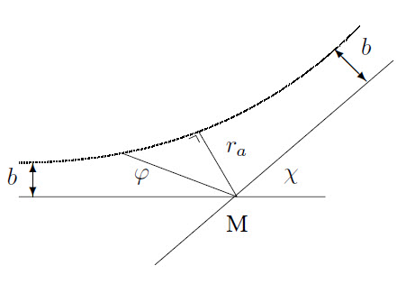

The degree of ionization \(\alpha\) of a plasma is defined by: \(\displaystyle\alpha=\frac{n_{\rm e}}{n_{\rm e}+n_{\rm 0}}\) where \(n_{\rm e}\) is the electron density and \(n_{\rm 0}\) the density of the neutrals. If a plasma contains also negative charged ions \(\alpha\) is not well defined.
The probability that a test particle collides with another is given by \(dP=n\sigma dx\) where \(\sigma\) is the cross section. The collision frequency \(\nu_{\rm c}=1/\tau_{\rm c}=n\sigma v\). The mean free path is given by \(\lambda_{\rm v}=1/n\sigma\). The rate coefficient \(K\) is defined by \(K=\left\langle \sigma v \right\rangle\). The number of collisions per unit of time and volume between particles of kind 1 and 2 is given by \(n_1n_2\left\langle \sigma v \right\rangle=Kn_1n_2\).
The potential of an electron is given by:
\[V(r)=\frac{-e}{4\pi\varepsilon_0r}\exp\left(-\frac{r}{\lambda_{\rm D}}\right) ~~~\mbox{with}~~~ \lambda_{\rm D}=\sqrt{\frac{\varepsilon_0kT_{\rm e}T_{\rm i}}{e^2(n_{\rm e}T_{\rm i}+n_{\rm i}T_{\rm e})}}\approx \sqrt{\frac{\varepsilon_0kT_{\rm e}}{n_{\rm e}e^2}}\]
because charge is shielded in a plasma. Here, \(\lambda_{\rm D}\) is the Debye length. For distances \(<\lambda_{\rm D}\) the plasma cannot be assumed to be quasi-neutral. Deviations of charge neutrality by thermic motion are compensated by oscillations with frequency
\[\omega_{\rm pe}=\sqrt{\frac{n_{\rm e}e^2}{m_{\rm e}\varepsilon_0}}\]
The distance of closest approximation when two equal charged particles collide for a deviation of \(\pi/2\) is \(2b_0=e^2/(4\pi\varepsilon_0\frac{1}{2}mv^2)\). A “neat” plasma is defined as a plasma for which holds: \(b_0<n_{\rm e}^{-1/3}\ll\lambda_{\rm D}\ll L_{\rm p}\). Here \(L_{\rm p}:=|n_{\rm e}/\bigtriangledown n_{\rm e}|\) is the gradient length of the plasma.
Relaxation times are defined as \(\tau=1/\nu_{\rm c}\). Starting with \(\sigma_{\rm m}=4\pi b_0^2\ln(\Lambda_{\rm C})\) and with \(\frac{1}{2}mv^2=kT\) it can be found that:
\[\tau_{\rm m}=\frac{4\pi\varepsilon_0^2m^2v^3}{ne^4\ln(\Lambda_{\rm C})}= \frac{8\sqrt{2}\pi\varepsilon_0^2\sqrt{m}(kT)^{3/2}}{ne^4\ln(\Lambda_{\rm C})}\]
For momentum transfer between electrons and ions for a Maxwellian velocity distribution:
\[\tau_{\rm ee}=\frac{6\pi\sqrt{3}\varepsilon_0^2\sqrt{m_{\rm e}}(kT_{\rm e})^{3/2}}{n_{\rm e}e^4\ln(\Lambda_{\rm C})}\approx\tau_{\rm ei}~~,~~ \tau_{\rm ii}=\frac{6\pi\sqrt{3}\varepsilon_0^2\sqrt{m_{\rm i}}(kT_{\rm i})^{3/2}}{n_{\rm i}e^4\ln(\Lambda_{\rm C})}\]
The energy relaxation times for identical particles are equal to the momentum relaxation times. Because for e-i collisions the energy transfer is only \(\sim2m_{\rm e}/m_{\rm i}\) this is a slow process. Approximately: \(\tau_{\rm ee}:\tau_{\rm ei}:\tau_{\rm ie}:\tau_{\rm ie}^E=1:1:\sqrt{m_{\rm i}/m_{\rm e}}:m_{\rm i}/m_{\rm e}\).
The relaxation for e-o interaction is much more complicated. For \(T>10\) eV approximately: \(\sigma_{\rm eo}=10^{-17}v_{\rm e}^{-2/5}\), for lower energies this can be a factor 10 lower.
The resistivity \(\eta=E/J\) of a plasma is given by:
\[\eta=\frac{n_{\rm e}e^2}{m_{\rm e}\nu_{\rm ei}}=\frac{e^2\sqrt{m_{\rm e}}\ln(\Lambda_{\rm C})}{6\pi\sqrt{3}\varepsilon_0^2(kT_{\rm e})^{3/2}}\]
The diffusion coefficient \(D\) is defined by means of the flux \(\Gamma\) by \(\vec{\Gamma}=n\vec{v}_{\rm diff}=-D\nabla n\). The equation of continuity is \(\partial_tn+\nabla(nv_{\rm diff})=0\Rightarrow\partial_tn=D\nabla^2n\). One finds that \(D=\frac{1}{3}\lambda_{\rm v}v\). A rough estimate gives \(\tau_{\rm D}=L_{\rm p}/D=L_{\rm p}^2\tau_{\rm c}/\lambda_{\rm v}^2\). For magnetized plasma’s \(\lambda_{\rm v}\) must be replaced with the cyclotron radius. In electrical fields also \(\vec{J}=ne\mu\vec{E}=e(n_{\rm e}\mu_{\rm e}+n_{\rm i}\mu_{\rm i})\vec{E}\) with \(\mu=e/m\nu_{\rm c}\) the mobility of the particles. The Einstein ratio is:
\[\frac{D}{\mu}=\frac{kT}{e}\]
Because a plasma is electrically neutral electrons and ions are strongly coupled and they don’t diffuse independent. The coefficient of ambipolar diffusion \(D_{\rm amb}\) is defined by \(\vec{\Gamma}=\vec{\Gamma}_{\rm i}=\vec{\Gamma}_{\rm e}=-D_{\rm amb}\nabla n_{\rm e,i}\). From this follows that
\[D_{\rm amb}=\frac{kT_{\rm e}/e-kT_{\rm i}/e}{1/\mu_{\rm e}-1/\mu_{\rm i}}\approx\frac{kT_{\rm e}\mu_{\rm i}}{e}\]
In an external magnetic field \(B_0\) particles will move in spiral orbits with cyclotron radius \(\rho=mv/eB_0\) and with cyclotron frequency \(\Omega=B_0e/m\). The helical orbit is perturbed by collisions. A plasma is called magnetized if \(\lambda_{\rm v}>\rho_{\rm e,i}\). So the electrons are magnetized if
\[\frac{\rho_{\rm e}}{\lambda_{\rm ee}}=\frac{\sqrt{m_{\rm e}}e^3n_{\rm e}\ln(\Lambda_{\rm C})}{6\pi\sqrt{3}\varepsilon_0^2(kT_{\rm e})^{3/2}B_0}<1\]
Magnetization of only the electrons is sufficient to confine the plasma reasonably because they are coupled to the ions by charge neutrality. In case of magnetic confinement: \(\nabla p=\vec{J}\times\vec{B}\). Combined with the two stationary Maxwell equations for the \(B\)-field these form the ideal magneto-hydrodynamic equations. For a uniform \(B\)-field: \(p=nkT=B^2/2\mu_0\).
If both magnetic and electric fields are present electrons and ions will move in the same direction. If \(\vec{E}=E_r\vec{e}_r+E_z\vec{e}_z\) and \(\vec{B}=B_z\vec{e}_z\) the \(\vec{E}\times\vec{B}\) drift results in a velocity \(\vec{u}=(\vec{E}\times\vec{B}\,)/B^2\) and the velocity in the \(r,\varphi\) plane is \(\dot{r}(r,\varphi,t)=\vec{u}+\dot{\vec{\rho}}(t)\).
The scattering angle of a particle in interaction with another particle, as shown in the figure below is:
\[\chi=\pi-2b\int\limits_{r_a}^\infty \frac{dr}{r^2\sqrt{\displaystyle 1-\frac{b^2}{r^2}-\frac{W(r)}{E_0}}}\]

Particles with an impact parameter between \(b\) and \(b+db\), moving through a ring with \(d\sigma=2\pi bdb\) leave the scattering area at a solid angle \(d\Omega=2\pi\sin(\chi)d\chi\). The differential cross section is then defined as:
\[I(\Omega)=\left|\frac{d\sigma}{d\Omega}\right|=\frac{b}{\sin(\chi)}\frac{\partial b}{\partial \chi}\]
For a potential energy \(W(r)=kr^{-n}\) follows: \(I(\Omega,v)\sim v^{-4/n}\).
For low energies, \(\cal O\)(1 eV), \(\sigma\) has a Ramsauer minimum. It arises from the interference of matter waves behind the object. \(I(\Omega)\) for angles \(0<\chi<\lambda/4\) is larger than the classical value.
For the Coulomb interaction: \(2b_0=q_1q_2/2\pi\varepsilon_0mv_0^2\), so \(W(r)=2b_0/r\). This gives \(b=b_0\cot(\frac{1}{2}\chi)\) and
\[I(\Omega=\frac{b}{\sin(\chi)}\frac{\partial b}{\partial \chi}=\frac{b_0^2}{4\sin^2(\mbox{$\frac{1}{2}$}\chi)}\]
Because the influence of a particle vanishes at \(r=\lambda_{\rm D}\) then: \(\sigma=\pi(\lambda_{\rm D}^2-b_0^2)\). Because \(dp=d(mv)=mv_0(1-\cos\chi)\) a cross section related to momentum transfer \(\sigma_{\rm m}\) is given by:
\[\sigma_{\rm m}=\int(1-\cos\chi)I(\Omega)d\Omega=4\pi b_0^2\ln\left(\frac{1}{\sin(\mbox{$\frac{1}{2}$}\chi_{\rm min})}\right)= 4\pi b_0^2\ln\left(\frac{\lambda_{\rm D}}{b_0}\right):=4\pi b_0^2\ln(\Lambda_{\rm C}) \sim\frac{\ln(v^4)}{v^4}\]
where \(\ln(\Lambda_{\rm C})\) is the Coulomb-logarithm. For this quantity: \(\Lambda_{\rm C}=\lambda_{\rm D}/b_0=9n(\lambda_{\rm D})\).
The induced dipole interaction, with \(\vec{p}=\alpha\vec{E}\), gives a potential \(V\) and an energy \(W\) in a dipole field is given by:
\[V(r)=\frac{\vec{p}\cdot\vec{e}_r}{4\pi\varepsilon_0r^2}~~,~~ W(r)=-\frac{|e|p}{8\pi\varepsilon_0 r^2}=-\frac{\alpha e^2}{2(4\pi\varepsilon_0)^2r^4}\]
with \(\displaystyle b_a=\sqrt[4]{\frac{2e^2\alpha}{(4\pi\varepsilon_0)^2\frac{1}{2}mv_0^2}}\) and therefore: \(\displaystyle\chi=\pi-2b\int\limits_{r_a}^\infty \frac{dr}{r^2\sqrt{\displaystyle 1-\frac{b^2}{r^2}+\frac{b_a^4}{4r^4}}}\)
If \(b\geq b_a\) the charge would hit the atom. Repulsing nuclear forces prevent this happening. If the scattering angle is a large compared to \(2\pi\) it is called capture. The cross section for capture \(\sigma_{\rm orb}=\pi b_a^2\) is called the Langevin limit, and is a lowest estimate for the total cross section.
If collisions of two particles with masses \(m_1\) and \(m_2\) which scatter in the centre of mass system by an angle \(\chi\) are compared with the scattering under an angle \(\theta\) in the laboratory system:
\[\tan(\theta)=\frac{m_2\sin(\chi)}{m_1+m_2\cos(\chi)}\]
The energy loss \(\Delta E\) of the incoming particle is given by:
\[\frac{\Delta E}{E}=\frac{\mbox{$\frac{1}{2}$}m_2v_2^2}{\mbox{$\frac{1}{2}$}m_1v_1^2}=\frac{2m_1m_2}{(m_1+m_2)^2}(1-\cos(\chi))\]
Scattering of light by free electrons is called Thomson scattering. The scattering is free from collective effects if \(k\lambda_{\rm D}\ll1\). The cross section \(\sigma=6.65\cdot10^{-29}\)m\(^2\) and
\[\frac{\Delta f}{f}=\frac{2v}{c}\sin(\mbox{$\frac{1}{2}$}\chi)\]
This gives for the scattered energy \(E_{\rm scat}\sim n\lambda_0^4/(\lambda^2-\lambda_0^2)^2\) with \(n\) the density. If \(\lambda\gg\lambda_0\) it is called Rayleigh scattering. Thomson scattering is a limit of Compton scattering, which is given by \(\lambda'-\lambda=\lambda_{\rm C}(1-\cos\chi)\) with \(\lambda_{\rm C}=h/mc\) and cannot be used any more if relativistic effects become important.
Planck’s radiation law and the Maxwell velocity distribution hold for a plasma in equilibrium:
\[\rho(\nu,T)d\nu=\frac{8\pi h\nu^3}{c^3}\frac{1}{\exp(h\nu/kT)-1}d\nu~~,~~ N(E,T)dE=\frac{2\pi n}{(\pi kT)^{3/2}}\sqrt{E}\exp\left(-\frac{E}{kT}\right)dE\]
“Detailed balancing” means that the number of reactions in one direction equals the number of reactions in the opposite direction because both processes have equal probability if one corrects for the used phase space. For the reaction
\[\sum_{\rm forward}{\rm X}_{\rm forward}~\lower.2ex\hbox{$\leftarrow$}\kern-2.3ex\raise.7ex\hbox{$\rightarrow$}~\sum_{\rm back}{\rm X}_{\rm back}\]
in microscopic reversibility in a plasma at equilibrium :
\[\prod_{\rm forward}\hat{\eta}_{\rm forward}=\prod_{\rm back}\hat{\eta}_{\rm back}\]
If the velocity distribution is Maxwellian, this gives:
\[\hat{\eta}_{x}=\frac{n_x}{g_x}\frac{h^3}{(2\pi m_xkT)^{3/2}}{\rm e}^{-E_{\rm kin}/kT}\]
where \(g\) is the statistical weight of the state and \(n/g:=\eta\). For electrons \(g=2\), for excited states usually \(g=2j+1=2n^2\).
With this one finds for the Boltzmann balance, \({\rm X}_p+{\rm e}^-~\rightleftharpoons ~{\rm X}_1+{\rm e}^-+(E_{1p})\)
\[\frac{n_p^{\rm B}}{n_1}=\frac{g_p}{g_1}\exp\left(\frac{E_p-E_1}{kT_{\rm e}}\right)\]
And for the Saha balance, \({\rm X}_p+{\rm e}^-+(E_{pi})~\rightleftharpoons ~{\rm X}_1^++2{\rm e}^-\):
\[\frac{n_p^{\rm S}}{g_p}=\frac{n_1^+}{g_1^+}\frac{n_{\rm e}}{g_{\rm e}} \frac{h^3}{(2\pi m_{\rm e}kT_{\rm e})^{3/2}}\exp\left(\frac{E_{pi}}{kT_{\rm e}}\right)\]
Because the number of particles on the left-hand side and right-hand side of the equation is different, a factor \(g/V_{\rm e}\) remains. This factor causes the Saha-jump.
From microscopic reversibility one can derive that for the rate coefficients \(K(p,q,T):=\left\langle \sigma v \right\rangle_{pq}\) and:
\[K(q,p,T)=\frac{g_p}{g_q}K(p,q,T)\exp\left(\frac{\Delta E_{pq}}{kT}\right)\]
The kinetic energy of a system can be split into the motion of the centre of mass and motion and a part in the centre of mass. The energy in the centre of mass system is available for reactions. This energy is given by
\[E=\frac{m_1m_2(v_1-v_2)^2}{2(m_1+m_2)}\]
Some types of inelastic collisions important for plasma physics are:
Collisions between an electron and an atom can be approximated by a collision between an electron and one of the electrons of that atom. This results in
\[\frac{d\sigma}{d(\Delta E)}=\frac{\pi Z^2 e^4}{(4\pi\varepsilon_0)^2E(\Delta E)^2}\]
Then follows for the transition \(p\rightarrow q\): \(\displaystyle \sigma_{pq}(E)=\frac{\pi Z^2e^4\Delta E_{q,q+1}}{(4\pi\varepsilon_0)^2E(\Delta E)_{pq}^2}\)
For ionization from state \(p\) to a good approximation it holds that: \(\displaystyle \sigma_p=4\pi a_0^2 Ry\left(\frac{1}{E_p}-\frac{1}{E}\right)\ln\left(\frac{1.25\beta E}{E_p}\right)\)
For resonant charge transfer: \(\displaystyle\sigma_{\rm ex}=\frac{A[1-B\ln(E)]^2}{1+CE^{3.3}}\)
In equilibrium for radiation processes:
\[\underbrace{n_pA_{pq}}_{\rm emission}+ \underbrace{n_pB_{pq}\rho(\nu,T)}_{\rm stimulated~emission}= \underbrace{n_qB_{qp}\rho(\nu,T)}_{\rm absorption}\]
Here, \(A_{pq}\) is the matrix element of the transition \(p\rightarrow q\), and is given by:
\[A_{pq}=\frac{8\pi^2e^2\nu^3|r_{pq}|^2}{3\hbar\varepsilon_0c^3}~~\mbox{with}~~ r_{pq}=\langle\psi_p|\vec{r}\,|\psi_q\rangle\]
For hydrogenic atoms: \(A_p=1.58\cdot10^8Z^4p^{-4.5}\), with \(A_p=1/\tau_p=\sum\limits_qA_{pq}\). The intensity \(I\) of a line is given by \(I_{pq}=hfA_{pq}n_p/4\pi\). The Einstein coefficients \(B\) are given by:
\[B_{pq}=\frac{c^3A_{pq}}{8\pi h\nu^3}~~\mbox{and}~~\frac{B_{pq}}{B_{qp}}=\frac{g_q}{g_p}\]
A spectral line is broadened by several mechanisms:
The natural broadening and the Stark broadening result in a Lorentz profile of a spectral line: \(k_\nu=\frac{1}{2}k_0\Delta\nu_L/[(\frac{1}{2}\Delta\nu_L)^2+(\nu-\nu_0)^2]\). The total line shape is a convolution of the Gauss- and Lorentz profile and is called a Voigt profile.
The number of transitions \(p\rightarrow q\) is given by \(n_pB_{pq}\rho\) and by \(n_pn_{hf}\left\langle \sigma_{\rm a} c \right\rangle=n_p(\rho d\nu/h\nu)\sigma_{\rm a}c\) where \(d\nu\) is the line width. Then the cross section of absorption processes follows: \(\sigma_{\rm a}=B_{pq}h\nu/cd\nu\).
The background radiation in a plasma originates from two processes:
It is assumed that there exists a distribution function \(F\) for the plasma so that
\[F(\vec{r},\vec{v},t)=F_r(\vec{r},t)\cdot F_v(\vec{v},t)=F_1(x,t)F_2(y,t)F_3(z,t)F_4(v_x,t)F_5(v_y,t)F_6(v_z,t)\]
Then the BTE is: \(\displaystyle \frac{dF}{dt}=\frac{\partial F}{\partial t}+\nabla_r\cdot(F\vec{v}\,)+\nabla_v\cdot(F\vec{a}\,)=\left(\frac{\partial F}{\partial t}\right)_{\rm coll-rad}\)
Assuming that \(v\) does not depend on \(r\) and \(a_i\) does not depend on \(v_i\), then \(\nabla_r\cdot(F\vec{v}\,)=\vec{v}\cdot\nabla F\) and \(\nabla_v\cdot(F\vec{a}\,)=\vec{a}\cdot\nabla_vF\). This is also true in magnetic fields because \(\partial a_i/\partial x_i=0\). The velocity is separated in a thermal velocity \(\vec{v}_{\rm t}\) and a drift velocity \(\vec{w}\). The total density is given by \(n=\int Fd\vec{v}\) and \(\int\vec{v}Fd\vec{v}=n\vec{w}\).
The balance equations can be derived by means of the moment method:
Here, \(\left\langle \vec{a}~ \right\rangle=e/m(\vec{E}+\vec{w}\times\vec{B}\,)\) is the average acceleration, \(\vec{q}=\frac{1}{2}nm\left\langle \vec{v}_{\rm t}^{~2}\vec{v}_{\rm t} \right\rangle\) the heat flow, \(\displaystyle Q=\int\frac{mv_{\rm t}^2}{r}\left(\frac{\partial F}{\partial t}\right)_{\rm cr}d\vec{v}\) the source term for energy production, \(\vec{R}\) is a friction term and \(p=nkT\) the pressure.
A thermodynamic derivation gives for the total pressure: \(\displaystyle p=nkT=\sum_ip_i-\frac{e^2(n_{\rm e}+z_{\rm i}n_{\rm i})}{24\pi\varepsilon_0\lambda_{\rm D}}\)
For the electrical conductance in a plasma follows from the momentum balance, if \(w_{\rm e}\gg w_{\rm i}\):
\[\eta\vec{J}=\vec{E}-\frac{\vec{J}\times\vec{B}+\nabla p_{\rm e}}{en_{\rm e}}\]
In a plasma where only elastic e-a collisions are important the equilibrium energy distribution function is the Druyvesteyn distribution:
\[N(E)dE=Cn_{\rm e}\left(\frac{E}{E_0}\right)^{3/2}\exp\left[-\frac{3m_{\rm e}}{m_0}\left(\frac{E}{E_0}\right)^2\right]dE\]
with \(E_0=eE\lambda_{\rm v}=eE/n\sigma\).
These models are first-moment equations for excited states. One assumes the Quasi-steady-state solution is valid, where \(\forall_{p>1}[(\partial n_p/\partial t=0)\wedge(\nabla\cdot(n_p\vec{w}_p)=0)]\). This results in:
\[\left(\frac{\partial n_{p>1}}{\partial t}\right)_{\rm cr}=0~~,~~ \frac{\partial n_1}{\partial t}+\nabla\cdot(n_1\vec{w}_1)=\left(\frac{\partial n_1}{\partial t}\right)_{\rm cr}~~,~~ \frac{\partial n_{\rm i}}{\partial t}+\nabla\cdot(n_{\rm i}\vec{w}_{\rm i})=\left(\frac{\partial n_{\rm i}}{\partial t}\right)_{\rm cr}\]
with solutions \(n_p=r_p^0n_p^{\rm S}+r_p^1n_p^{\rm B}=b_pn_p^{\rm S}\). Further for all collision-dominated levels with \(\delta b_p:=b_p-1=b_0p_{\rm eff}^{-x}\) with \(p_{\rm eff}=\sqrt{Ry/E_{p{\rm i}}}\) and \(5\leq x\leq6\). For systems in ESP, where only collisional (de)excitation between levels \(p\) and \(p\pm1\) is taken into account \(x=6\). Even in plasma’s far from equilibrium the excited levels will eventually reach ESP, so from a certain level up the level densities can be calculated.
To find the population densities of the lower levels in the stationary case one has to start with a macroscopic equilibrium:
\[\mbox{Number of populating processes of level}~p~=~ \mbox{Number of depopulating processes of level}~p~,\]
When this is expanded it becomes:
\[\underbrace{n_{\rm e}\sum_{q<p}n_qK_{qp}}_{\rm coll.~excit.}+ \underbrace{n_{\rm e}\sum_{q>p}n_qK_{qp}}_{\rm coll.~deexcit.}+ \underbrace{\sum_{q>p}n_qA_{qp}}_{\rm rad.~deex.~to}+ \underbrace{n_{\rm e}^2n_{\rm i}K_{+p}}_{\rm coll.~recomb.}+ \underbrace{n_{\rm e}n_{\rm i}\alpha_{\rm rad}}_{\rm rad.~recomb}=\]
\[\underbrace{n_{\rm e}n_p\sum_{q<p}K_{pq}}_{\rm coll.~deexcit.}+ \underbrace{n_{\rm e}n_p\sum_{q>p}K_{pq}}_{\rm coll.~excit.}+ \underbrace{n_p\sum_{q<p}A_{pq}}_{\rm rad.~deex.~from}+ \underbrace{n_{\rm e}n_pK_{p+}}_{\rm coll.~ion.}\]
Interaction of electromagnetic waves in plasma’s results in scattering and absorption of energy. For electromagnetic waves with complex wave number \(k=\omega(n+i\kappa)/c\) in one dimension one finds: \(E_x=E_0{\rm e}^{-\kappa\omega x/c}\cos[\omega(t-nx/c)]\). The refractive index \(n\) is given by:
\[n=c\frac{k}{\omega}=\frac{c}{v_{\rm f}}=\sqrt{1-\frac{\omega_{\rm p}^2}{\omega^2}}\]
For disturbances in the \(z\)-direction in a cold, homogeneous, magnetized plasma: \(\vec{B}=B_0\vec{e}_z+\vec{\hat{B}}{\rm e}^{i(kz-\omega t)}\) and \(n=n_0+\hat{n}{\rm e}^{i(kz-\omega t)}\) (external \(E\) fields are screened) follows, with the definitions \(\alpha=\omega_{\rm p}/\omega\) and \(\beta=\Omega/\omega\) and \(\omega_{\rm p}^2=\omega_{\rm pi}^2+\omega_{\rm pe}^2\):
\[\vec{J}=\vec{\vec{\sigma}}\vec{E}~~,\mbox{with}~~ \vec{\vec{\sigma}}=i\varepsilon_0\omega\sum_s\alpha_s^2 \left(\begin{array}{ccc} \displaystyle\frac{1}{1-\beta_s^2}&\displaystyle\frac{-i\beta_s}{1-\beta_s^2}&0\\ \displaystyle\frac{i\beta_s}{1-\beta_s^2}&\displaystyle\frac{1}{1-\beta_s^2}&0\\ 0&0&1 \end{array}\right)\]
where the sum is taken over particle species \(s\). The dielectric tensor \(\cal E\), with property:
\[\vec{k}\cdot \left( \vec{\vec{\cal E}}\cdot \vec{\textrm{E}} \right )=0 \]
is given by \(\vec{\vec{\cal E}} =\vec{\vec{I}}-\vec{\vec{\sigma}}/i \cal E_0 \omega\)
With the definitions \(\displaystyle S=1-\sum_s\frac{\alpha_s^2}{1-\beta_s^2}~~,~~ D=\sum_s\frac{\alpha_s^2\beta_s}{1-\beta_s^2}~~,~~ P=1-\sum_s\alpha_s^2\)
it follows that:
\[\vec{\vec{\cal E}}=\left(\begin{array}{ccc}S&- iD&0\\iD&S&0\\0&0&P\end{array}\right)\]
The eigenvalues of this hermitian matrix are \(R=S+D\), \(L=S-D\), \(\lambda_3=P\), with eigenvectors \(\vec{e}_{\rm r}=\frac{1}{2}\sqrt{2}(1,i,0)\), \(\vec{e}_{\rm l}=\frac{1}{2}\sqrt{2}(1,-i,0)\) and \(\vec{e}_{\rm 3}=(0,0,1)\). \(\vec{e}_{\rm r}\) is connected with a right rotating field for which \(iE_x/E_y=1\) and \(\vec{e}_{\rm l}\) is connected with a left rotating field for which \(iE_x/E_y=-1\). When \(k\) makes an angle \(\theta\) with \(\vec{B}\) one finds:
\[\tan^2(\theta)=\frac{P(n^2-R)(n^2-L)}{S(n^2-RL/S)(n^2-P)}\]
where \(n\) is the refractive index. From this the following solutions can be obtained:
A. \(\theta=0\): transmission in the $z$-direction.
B. \(\theta=\pi/2\): transmission \(\perp\) the \(B\)-field.
Resonance frequencies are frequencies for which \(n^2\rightarrow\infty\), so \(v_{\rm f}=0\). For these: \(\tan(\theta)=-P/S\). For \(R\rightarrow\infty\) this gives the electron cyclotron resonance frequency \(\omega=\Omega_{\rm e}\), for \(L\rightarrow\infty\) the ion cyclotron resonance frequency \(\omega=\Omega_{\rm i}\) and for \(S=0\) for the extraordinary mode:
\[\alpha^2\left(1-\frac{m_{\rm i}}{m_{\rm e}}\frac{\Omega_{\rm i}^2}{\omega^2}\right)= \left(1-\frac{m_{\rm i}^2}{m_{\rm e}^2}\frac{\Omega_{\rm i}^2}{\omega^2}\right) \left(1-\frac{\Omega_{\rm i}^2}{\omega^2}\right)\]
Cut-off frequencies are frequencies for which \(n^2=0\), so \(v_{\rm f}\rightarrow\infty\). For these: \(P=0\) or \(R=0\) or \(L=0\).
In the case that \(\beta^2\gg1\) one finds Alfvén waves propagating parallel to the field lines. With the Alfvén velocity
\[v_{\rm A}=\frac{\Omega_{\rm e}\Omega_{\rm i}}{\omega_{\rm pe}^2+\omega_{\rm pi}^2}c^2\]
follows: \(n=\sqrt{1+c/v_{\rm A}}\), and in case \(v_{\rm A}\ll c\) then: \(\omega=kv_{\rm A}\).